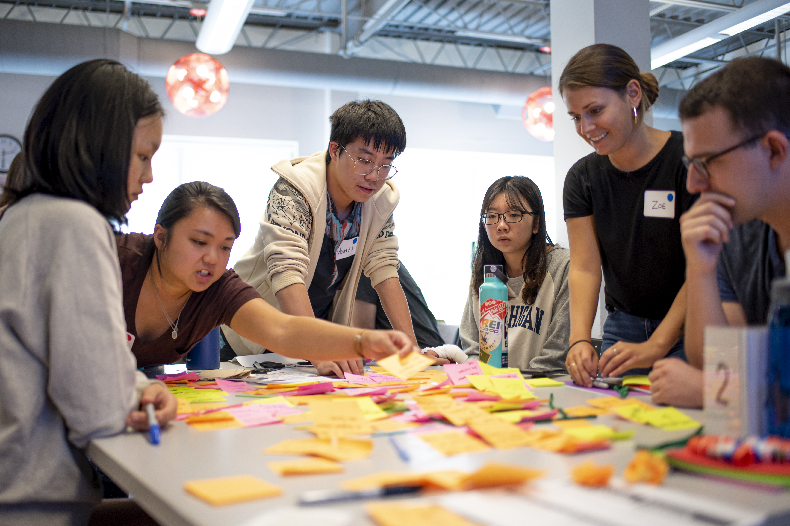
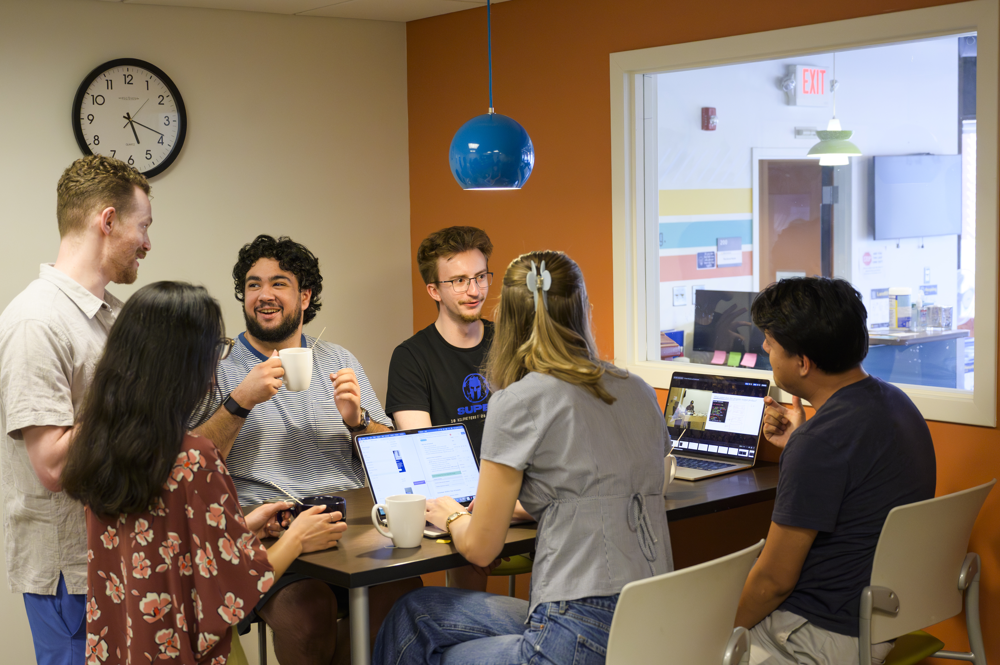

Launch Your Engaged Learning Journey
Transform your academic foundation into real-world impact. The University of Michigan School of Information (UMSI) Engaged Learning Office (ELO) will guide you through the early stages of project work—from self-reflection and understanding community context to defining team responsibilities and leading your first partner meeting.
Why the Work Starts Before the Project
Engaged learning at UMSI is different from a traditional classroom assignment. You are moving beyond a controlled academic environment and into a complex, unscripted setting where technical solutions intersect with people’s lives, organizational cultures, and community priorities.
A successful project rarely begins by jumping straight into execution. It begins by establishing a foundation for ethical, sustainable collaboration.
Before starting the work, your team should take time to:
- Reflect on personal identities, assumptions, and positionality
- Understand the community and organizational context
- Assess the team’s skills, capacity, and responsibilities
- Listen carefully to the partner’s goals and priorities
- Establish clear boundaries and shared expectations
- Agree on communication practices and decision-making processes
These steps help prevent misunderstandings, unrealistic commitments, and unintended harm. When a project begins with mutual respect and honest communication, a class deliverable can become a reciprocal partnership that creates meaningful value for everyone involved.
Choose Where to Start:

Phase 1: Preparing for the Experience
Build the foundation for your project by understanding its community context, evaluating your team’s readiness, and clarifying initial needs and expectations.
Why Preparation Matters
Before writing code, sketching wireframes, or analyzing data, engaged learners must develop social-identity awareness and ethical humility.
Entering a community or client environment without examining your own assumptions can lead to misaligned expectations or unintended harm. Thoughtful preparation helps you approach the partnership not as an outside “expert” arriving to fix a problem, but as a collaborative learner working alongside people who bring essential knowledge, experience, and expertise.
What You'll Do
1. Develop Social and Community Awareness
Use civic-engagement frameworks to reflect on personal identity, privilege, positionality, and community dynamics.
Consider:
- What assumptions are you bringing to the project?
- How might your identity and experiences influence your perspective?
- Who holds knowledge and decision-making power?
- Whose perspectives might be missing?
- How will community members participate in project decisions?
2. Align Expectations and Roles
Review program requirements, project commitments, and leadership responsibilities before making promises to a partner.
Your team should clarify:
- Individual and shared responsibilities
- Leadership and project-management roles
- Expected time commitments
- Available skills and capacity
- Communication and decision-making processes
- Program milestones and requirements
3. Begin Scoping the Project
Work with your team and partner to understand the organization’s needs and evaluate whether the proposed project is feasible.
An initial scope should identify:
- The need or opportunity the project will address
- The people and communities affected
- Desired outcomes
- Potential deliverables
- Available time, resources, and expertise
- Known constraints and risks
- Questions that still need to be answered
Note: Initial scoping is not a promise that every detail is final. It creates a shared starting point that can be refined as your team learns more.
Phase 1 Checklist
Before moving to Phase 2, confirm that your team has:
- Reflected on personal identity, assumptions, and positionality
- Considered the community and organizational context
- Discussed ethical and reciprocal engagement practices
- Reviewed program expectations and requirements
- Clarified student-lead and project-manager responsibilities
- Assessed the team's skills, availability, and capacity
- Identified the partner's initial needs and priorities
- Evaluated the project's initial feasibility
- Drafted preliminary objectives, roles, and timelines
- Documented open questions to discuss with the partner
Featured Preparation Resources

Phase 2: Starting the Experience
Turn the project idea into a structured partnership by establishing professional communication, conducting an effective kickoff meeting, and documenting shared agreements.
Why a Strong Start Matters
First impressions can shape the trajectory of a partnership. This is the point where an abstract idea becomes a professional commitment.
By creating team agreements, co-developing meeting agendas, and aligning on project scope early, you can:
- Build trust with your client or community partner
- Create psychological safety within the team
- Reduce uncertainty and prevent misunderstandings
- Set realistic expectations
- Establish shared ownership of the project
- Create a process for navigating future changes
Learning to move forward responsibly when some details remain uncertain is an important professional capability you will develop at UMSI.
What You'll Do
1. Launch Partner Communication
Draft clear, professional outreach that introduces the team, confirms your understanding of the project, and proposes concrete next steps.
Your first message should generally include:
- A brief introduction to the team
- Your understanding of the project
- A request to schedule an initial meeting
- Suggested dates or scheduling instructions
- A preview of what you would like to discuss
- A clear point of contact
- A professional closing
Avoid making commitments about scope, deliverables, or timelines before discussing them with the partner and confirming that your team can meet them.
2. Conduct the Kickoff Meeting
Use a structured agenda to establish a shared understanding of the partnership.
The kickoff meeting should help participants:
- Introduce themselves and explain their roles
- Discuss the partner's organization and community context
- Clarify the project's purpose and desired outcomes
- Identify stakeholders and decision-makers
- Define the initial scope and project boundaries
- Discuss deliverables, milestones, and constraints
- Agree on communication channels and meeting frequency
- Identify unanswered questions, risks, and dependencies
- Assign action items and next steps
Design the meeting as a conversation rather than a presentation. Leave enough time for the partner to share context, priorities, and concerns.
3. Formalize Agreements
Document the decisions made by the team and partner so that everyone has the same reference point.
Shared documentation should address:
- Project purpose and intended outcomes
- Scope, boundaries, and deliverables
- Team and partner roles
- Communication practices
- Meeting expectations
- Decision-making and approval processes
- Milestones and deadlines
- Information or resources each party will provide
- Processes for changing the scope
- Processes for raising and addressing concerns
Treat the agreement as shared tool, not merely a form to complete. Revisit it when circumstances, capacity, or priorities change.
Phase 2 Checklist
Before beginning substantial project work, confirm that your team has:
- Sent a professional introductory message
- Scheduled and prepared for the kickoff meeting
- Shared or co-created a kickoff meeting agenda
- Introduced all participants and clarified their roles
- Discussed the partner's goals and organizational context
- Identified stakeholders and decision-makers
- Clarified project scope, boundaries, and deliverables
- Agreed on communication channels and response expectations
- Established a recurring meeting schedule, if appropriate
- Documented decisions, open questions, and action items
- Completed and shared the appropriate partnership agreement
- Reviewed milestones, deadlines, and submission requirements
- Confirmed who will maintain project documentation
Featured Preparation Resources
Ready for the Next Phase?
Once your team has completed its preparation, met with your partner, and documented shared expectations, you’re ready to move from planning into action.
In the next phase, you’ll learn how to coordinate project work, maintain effective partner communication, track progress, and respond to changes throughout the experience.
Continue to Phase 3: During Your Experience
 Skip to Main Content
Skip to Main Content